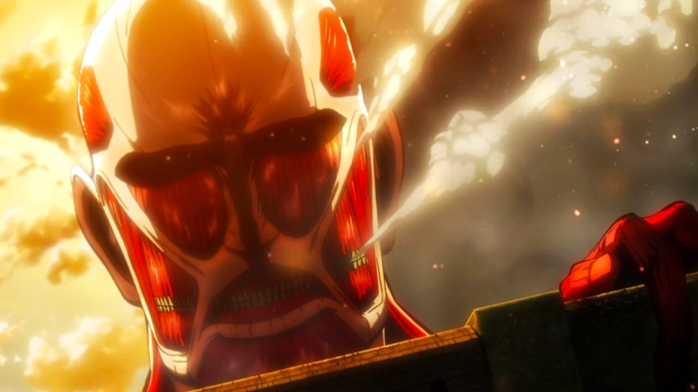
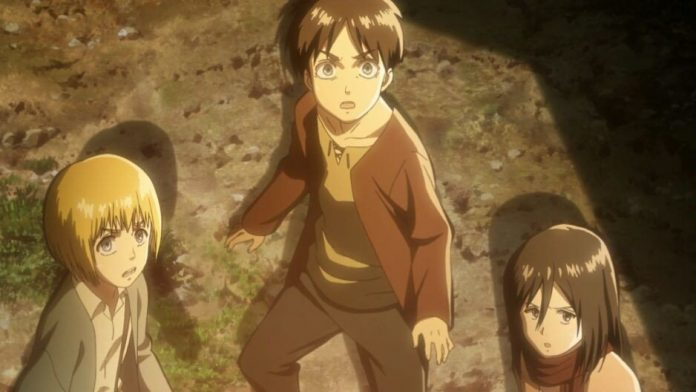

SHINGEKI NO KYOJIN

ARGUMENTO
Argumento La historia se sitúa en un futuro donde la humanidad debe protegerse mediante muros de 50 metros de altura, debido al ataque de los titanes. Un siglo después la paz se corrompe, un titán más alto que las mismas murallas destroza parte de estas, permitiendo la entrada de un gran grupo de titanes de menor tamaño.
En un mundo post-apocalíptico donde los restos de la humanidad han vivido en paz durante un siglo detrás de muros que los protegen de los titanes humanoides gigantes, Attack on Titan sigue a un joven apasionado, Eren Yeager, y sus amigos, la potencia femenina Mikasa Ackerman y el inteligente nervioso. arruinar Armin Arlert. Cuando una gigantesca nueva generación de Titán, el Colosal, aparece repentinamente y abre una brecha en la pared exterior, los Titanes inundan, destruyendo la ciudad natal de Eren y devorando a su madre. Jurando venganza, Eren se entrena como soldado y, finalmente, cumple el sueño de su vida de unirse a la élite Survey Corps, un grupo de soldados que se aventuran a luchar contra los titanes. Attack on Titan narra esta pelea, mientras investiga el origen y la historia de los titanes.

Attack on Titan ha recibido elogios generalizados y, en particular, ha mantenido una base de fans amplia, activa e internacional. Los críticos y el público han elogiado la historia, los personajes, la animación, la música, la actuación de voz y los temas oscuros (aunque a veces humorísticos).
Shingeki no Kyojin adapta el contenido de los primeros 8 volúmenes del galardonado manga del mismo nombre de Hajime Isayama.